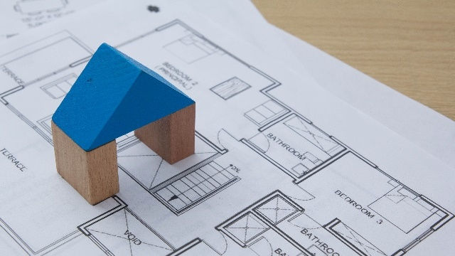

私事ですが、最近なんとなく家を買おうかなと思い立ち、いろいろと物件を探しています。最近は便利なもので、不動産屋にいかなくても、ネットの情報サイトで色々とみることができますね。不動産屋であれば、「あれも見せて」「これも見せて」とやり過ぎるのとなんとなく申し訳なくなって遠慮してしまうものですが、ネットであれば好きなだけ見ていられます。かっこいいCGや写真、間取り図が次々に画面に現れると、ついつい引き込まれてしまい、気づいたら1時間も2時間も…。
買いものが大好きな私ですから、この「欲しいものを前もって調べている」時間はたまりません。特に大きい買い物になると、ライフスタイルを左右するだけに夢も膨らみます。しかし、ふと現実に引き戻される瞬間もあるのです。おわかりかと思いますが、それは値段。やはり、4桁万円ともなると胸を締め付けられるような不安、息苦しさがあります。
さらに家の場合、ただ買うだけではなく、その前に色々と複雑な契約が必要になるため、徒労感も増しますね。
手続きは複雑で面倒だし、金額が金額なので失敗できないし…と考えていくと、頭を抱えたくなるイライラです。先ほどまで妄想していたバラ色の生活はたちまち色あせ、とにかくげっそり。
面倒な手続きもやり方を全部教えてくれて、物件もよいものをばっちりチェックしてくれるプロがいてくれたら心強いのになぁ。そう強く思います。
これはひょっとしたら、私がいる教育業界も同じかも知れません。学校と塾に子供を通わせるとなると、全部ひっくるめれば家が買えてしまうほどの金額になります。さらに、家と同様、学校・塾もどう選んだらよいのか、一般の人にはなかなかわかりません。パンフレットに書かれていることはどれも同じに見えるし、はっきり数字でわかる「実績」の部分もどう理解すればよいのかわからないし、なにより、自分の子供とフィットするかとなると運も大きく絡んできますから、家どころの話ではありません。
ただ、プロの立場から見れば、「あの学校は○○だよね」「あの塾は○○だよね」「あの実績は……」と、当たり前のように知っている情報がほとんどです。このタイプの生徒であればAが合う、あのタイプであればBが合う、そのニーズであればCが一番といった大まかな方向性も知っています。私自身、それが当たり前なので、一般の方がする選択に「なんでそんな変な選び方をするんだろう」と思ったことが何度もありました。
しかし、自分が不動産の門外漢として頭をかきむしる経験をしてみると、ひょっとしたら学校や塾についての“当たり前”の知識も門外漢の方の役に立つのではないかと思い至りました。
そんなわけで、もし読者の皆さんの中で、現在進行形で学校選び・塾選びにお悩みの方がいらっしゃったら、是非メッセージをくださいね。力の及ぶ限りお助けしたいと思います。そして代わりに不動産関係の相談に乗ってください！（笑）
ARCSとして、来たる12月11日（日）に、塾ソムリエと題して「中学生向けの塾の選び方」をお伝えするイベントを柏駅近くの京北ホールで行います。お申し込みなどはまだ先になるかと思いますが、お暇がございましたら是非ご参加ください！